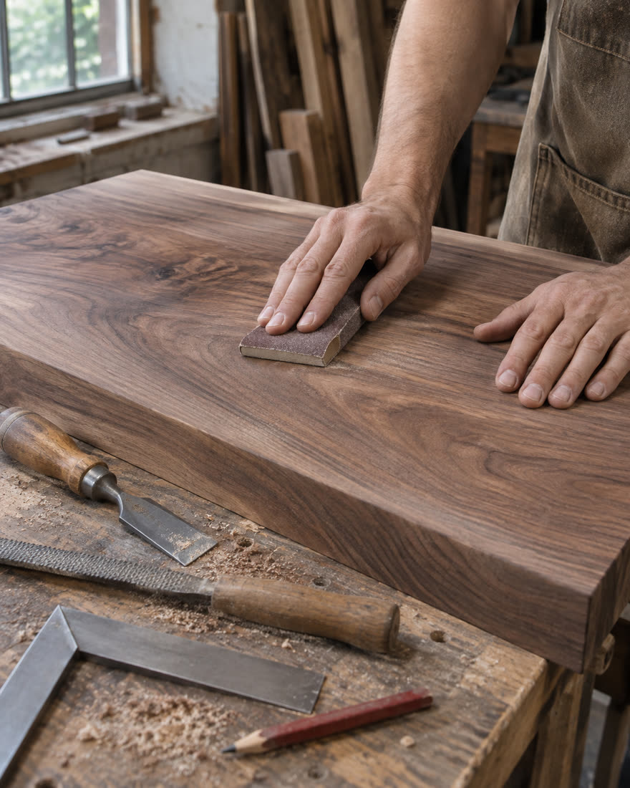

A casa é sua.
O móvel também
deve ser.
Cozinhas, armários e mesas desenhados para o espaço que você tem — e para o jeito que você vive.
Pedir orçamento pelo WhatsAppDemonstração: negócio fictício, sem atendimento real.

Do primeiro desenho
ao último encaixe.
Começamos pelo que precisa caber. Depois escolhemos juntos material, acabamento e medidas.
Preços e prazos abaixo são exemplos fictícios, para mostrar como comunicar um serviço.
Cozinhas para o dia a dia
Armários inferiores e superiores, aproveitando cada canto da planta.
A partir de R$ 12.000 · exemplo: 45 diasArmários com lugar para tudo
Divisórias pensadas para suas roupas, malas e objetos de uso diário.
A partir de R$ 6.500 · exemplo: 30 diasMesas para reunir
Uma mesa do tamanho da conversa, com acabamento fácil de cuidar.
A partir de R$ 2.800 · exemplo: 20 dias
Vamos começar
pelas medidas?
Para pedir um orçamento, tenha em mãos uma foto do espaço, as medidas aproximadas e o tipo de móvel.
Este é um site de exemplo.
O botão do topo leva a esta orientação. Em um negócio real, coloque aqui o número de WhatsApp autorizado.